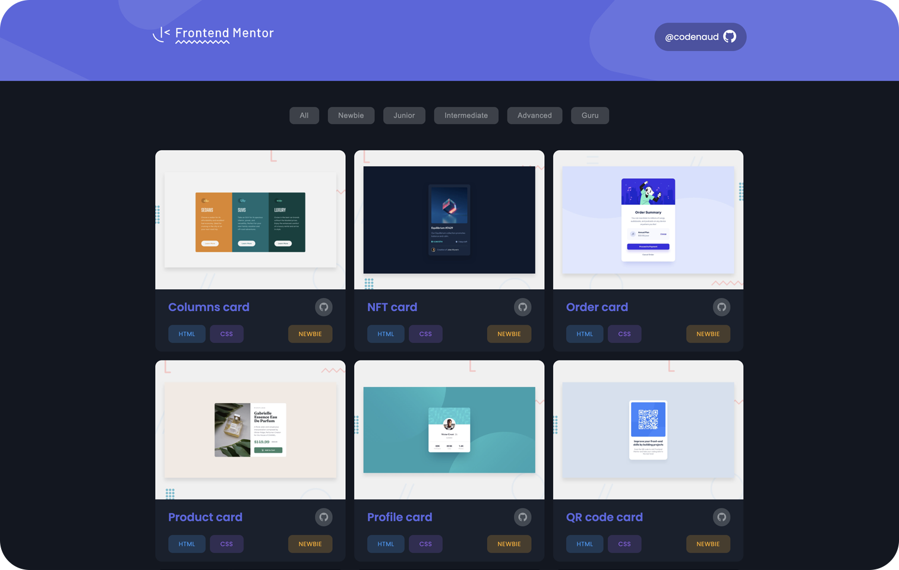

Frontend Mentor
Este proyecto sirve como muestra de mis soluciones a varios desafíos presentados por Frontend Mentor. Cada desafío representa una oportunidad para demostrar mis habilidades en HTML, CSS y JavaScript.
Como desarrollador front-end apasionado, me esfuerzo por crear soluciones funcionales y visualmente atractivas que se adhieran a los principios del diseño moderno. Explore el portafolio para ver una colección de proyectos, cada uno de los cuales demuestra mi compromiso de producir código de alta calidad y lograr diseños receptivos y fáciles de usar.
Características
 Calidad del código: experimente un código limpio y bien estructurado que sigue las mejores
prácticas.
Calidad del código: experimente un código limpio y bien estructurado que sigue las mejores
prácticas.-
Diseño responsivo: explore proyectos optimizados para diferentes tamaños de pantalla y dispositivos.
-
Actualizaciones continuas: el portafolio se actualiza periódicamente con nuevas soluciones a
desafíos.
Tecnologías
- HTML
- CSS
- JavaScript